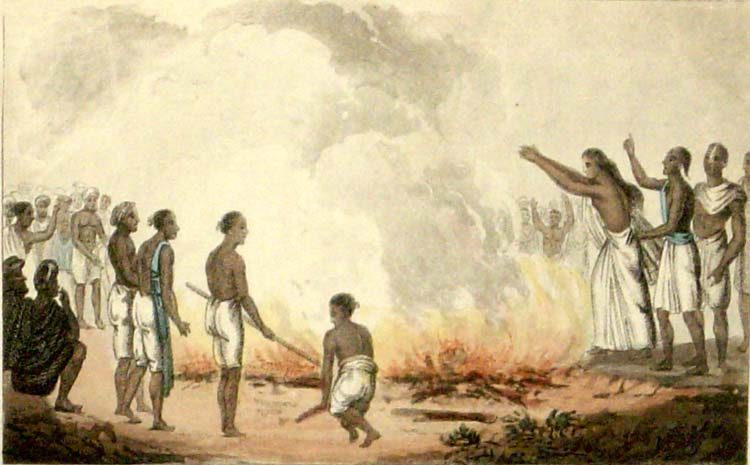
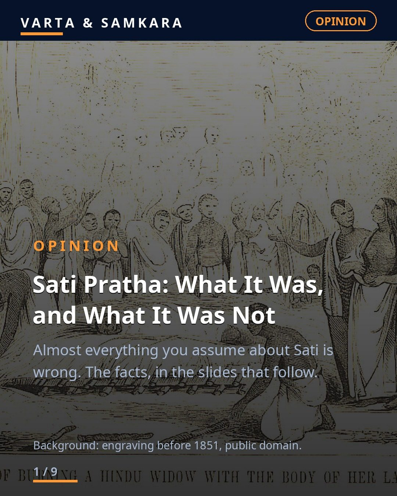
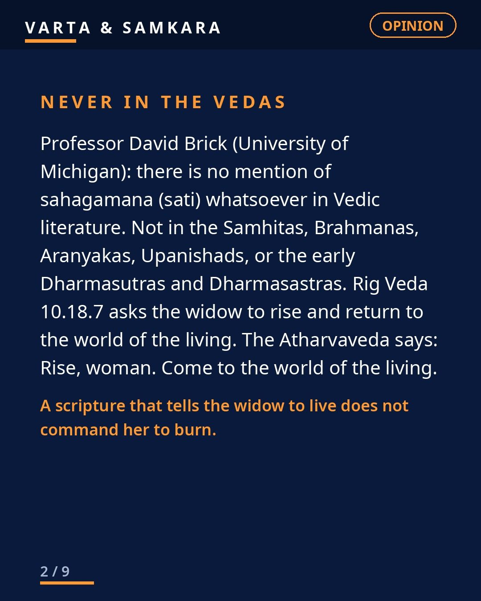
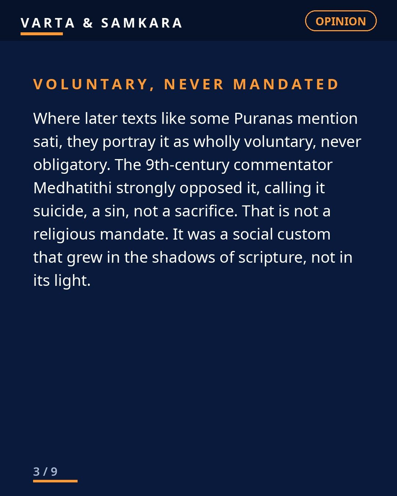
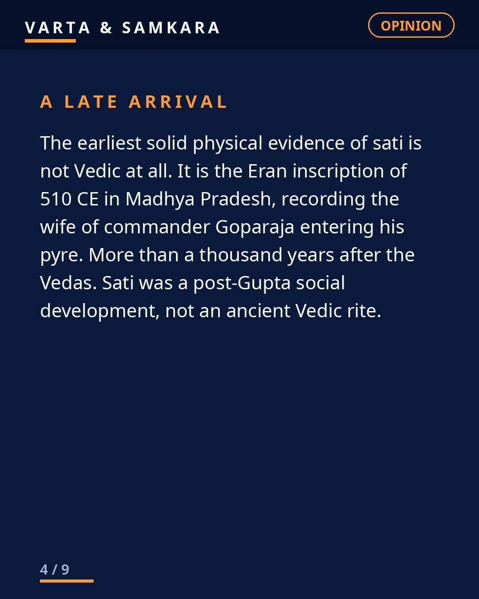
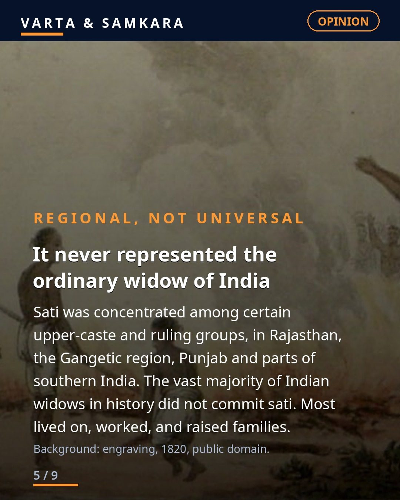
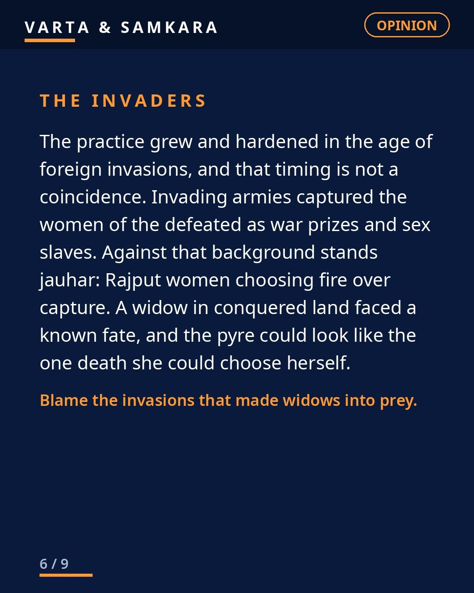
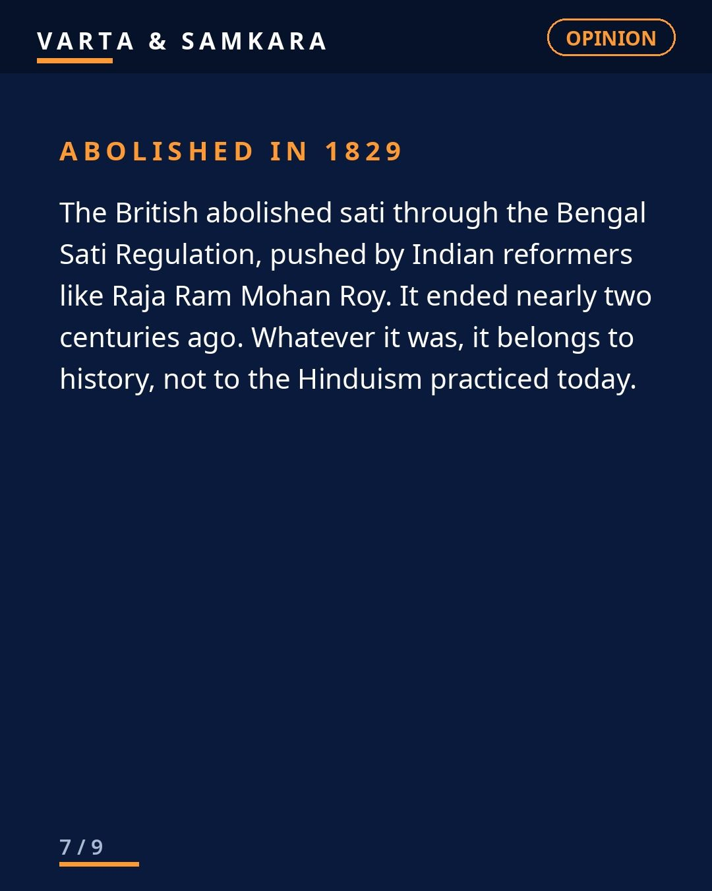
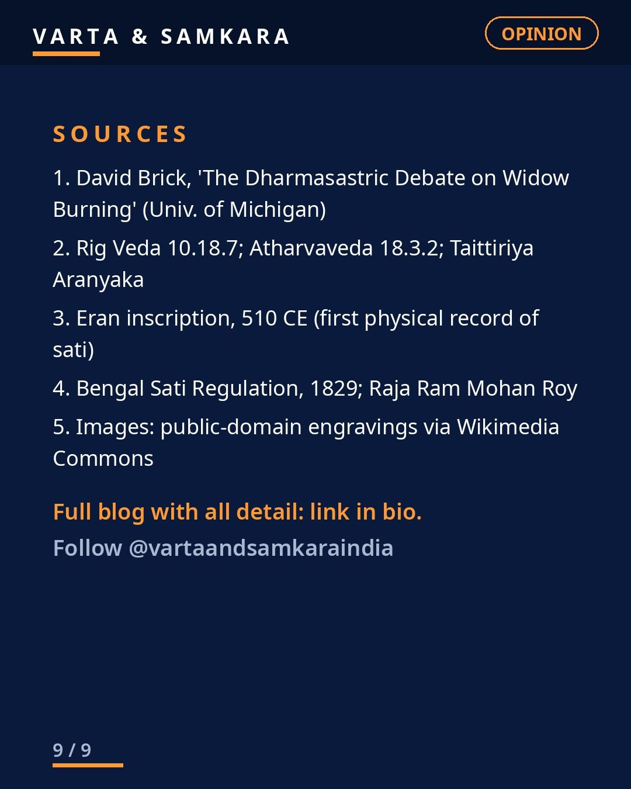

OPINION: Sati Pratha, what it was, and what it was not.

Almost everything you assume about Sati is wrong.
It was never in the Vedas or Upanishads. Professor David Brick (University of Michigan): no mention of sahagamana in the Samhitas, Brahmanas, Aranyakas, Upanishads, or the early Dharmasutras and Dharmasastras. Rig Veda 10.18.7 asks the widow to rise and return to the world of the living.
Where later texts mention it, they frame it as wholly voluntary, never obligatory. The 9th-century commentator Medhatithi called it suicide, a sin.
The first physical evidence is the Eran inscription of 510 CE. More than a thousand years after the Vedas. It was regional: Rajasthan, the Gangetic region, Punjab, parts of southern India, among certain upper-caste and ruling groups. The vast majority of Indian widows never committed sati.
And it grew in the age of foreign invasions. Invading armies took the women of the defeated as war prizes and sex slaves. Jauhar, Rajput women choosing fire over capture, is documented history. In that world, the pyre could look like the one death a woman could choose herself. Blame the invasions that made widows into prey.
Abolished in 1829. Two centuries ago.
Now compare: Europe's witch hunts burned 40,000 to 60,000 people, three-quarters women, over 300 years, with courts and churches running the machine. One civilization's crimes are a weapon. The other's are a footnote. Study history honestly, or do not study it at all.
Full blog on our website, link in bio.
Sources: David Brick, The Dharmasastric Debate on Widow Burning; Rig Veda 10.18.7; Atharvaveda 18.3.2; Eran inscription 510 CE; Bengal Sati Regulation 1829. Images: public-domain engravings via Wikimedia Commons (pre-1851; 1820; James Atkinson 1831, British Library).
In pictures








See the original reel / carousel with motion graphics on Instagram.
View on Instagram